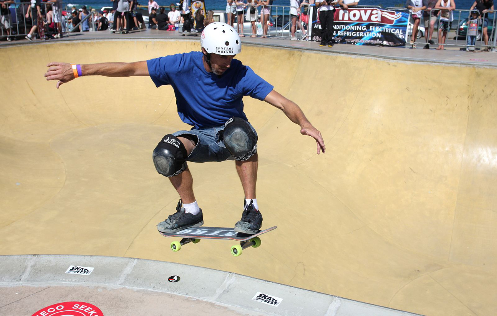
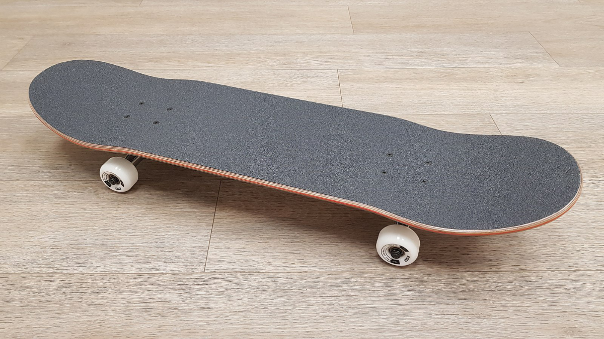

The most important part of skating is to do it safely.
Take appropriate precautions to prevent serious injury or even death. Wear a helmet, but also avoid riding past dark whenever possible, or in areas with a lot of cars, or near crossings with low visibility.
Getting Started
The best way to start is with help from a friend. They can help you figure out if you’re goofy or regular, offer a shoulder to lean on while you get your balance, adjust your foot stance, and show you how to start and stop. Borrow a board before committing to a $150+ purchase. Before you go anywhere on a board, it's important to know how to stop either by dragging your foot along the ground, or by bailing into some grass off the side of the road. If you can’t stop, you’re very likely to get squashed by a car.
You should make sure someone knows you’re going to practice a dangerous sport. Look for a flat, recently paved, low traffic parking lot. A sloped parking lot is good for intermediate practice when you want to be able to pick up a little bit of speed without having to do all the pushing yourself. A recently paved parking lot will make the ride much more stable. Your feet will tingle uncomfortably from the vibrations until they get used to it.
A craggy parking lot also makes it likelier you’ll hit a crack where your wheel gets stuck and you'll be launched from your board. You should always strive to ride in low traffic areas. Cars are your number one source of danger. Good drivers might not always see you. Many drivers have no interest in preserving the lives of pedestrians, bicyclists, or skaters. When you’re not entirely comfortable on a board, you want to stay as far away from cars as possible, including when in parking lots.
When you get your bearings on a board and start to feel comfortable enough to get on the road, always go out with a helmet, pads, water, and phone. It’s a good idea to have a route or area you want to skate in mind before you leave, and that you know the area, the traffic, and the quality of the roads. Avoid steep roads, especially ones with intersections. Wear a highly visible shirt and helmet. Riding after the sun sets is dangerous and ill advised, and if you’re going to do it you at the very least should bring reflective clothing and a headlamp.

What to buy?
A reasonable price for a complete board set will typically cost between $120 and $200, depending on brand and style. A basic flat double-kick drop-through longboard should not run you more than $160. If you pay more than that, its too much. Expect to be overcharged if you shop at Zumiez. Underpaying for a board can be dangerous. The deck could break, leaving you wtih splinters and a hole in your heart. The bearings could lock, throwing you from the board at high speed. The materials might be low quality such that the board is rendered unusable in just a couple of years due to wear and tear. A good board that is well maintained can last many years, making spending more money a better idea than getting something on Amazon for $50 that will hurt you. My first board is more than 5 years old and is still in good condition.
I recommend buying a flat board with drop-through trucks. You will be closer to the ground, which means you’ll be safer and get less tired from pushing. You won’t have to worry about wheel-bite or other dangers of top-mounted decks. You’ll have a nice, relaxed standing platform that won’t hurt your feet. Other common starter boards are pin tails, which are long, flat boards that end in a sharp point, and cruisers: top-mounts that come with a kick tail enabling some skateboard-style tricks. What about accessories and gear?
For protective gear: Knee and elbow pads, wrist guards, a helmet, and jeans. Pads and wrist guards are typically sold in a set, and you should do some significant research on what will fit you if you’re going to buy online. Skating is unfortunately a hobby that involves a lot of online purchasing if you’re not lucky enough to have a skate shop local to you. A helmet is non-negotiable. As you get more comfortable on a board, whether you wear a helmet is your choice. But as a beginner, choosing not to wear a helmet is absolutely idiotic: you will fall, and you will get a concussion if not worse. Tough jeans are a great addition- they will limit the amount of road burn you end up with on your legs and hips, and you don’t even have to pay for pre-ripped ones if you fall enough! Slide gloves are optional, especially as they’re more useful for advanced maneuvers than they are for beginners. But they do help keep your hands safe. Other accessories: To start, all you need is a skate tool. Get one that’s entirely made of metal, otherwise the plastic will bend and warp when you’re trying to loosen a bolt that was put on a bit too tight by the manufacturer. You will eventually need to replace your skate hardware as it gets rusty and degrades.

All the skate component terminology you could ever want, just a half-page scroll away.

Components made clear
Things that attach to the board
- Trucks – The metal fixtures that attach to the bottom of the deck
- Drop-through vs top-mount – Drop through trucks split in half. The top half screws into the top of the deck, and the bottom half into the bottom of the deck. A deck must be specifically built to accommodate a drop through setup. The result of using a drop through setup is a more stable ride that is lower to the ground. Top mount trucks situate the entire apparatus beneath the board with attachment screws being the only part that are on the top of the deck. Top mounted setups get you higher off of the ground and allow for a narrower hanger width.
- Hangers – Hangers are the metal elements on the outside of the trucks. They are where the wheels are mounted and secured.
- Kingpin – The kingpin is a large nut that goes on the outside of the truck to secure the mounting plate and the rest of the truck together. The kingpin also keeps the bushings in place. The tension of the kingpin is used to modify how quickly the board can turn and how stable it is.
- Riser – A pad of plastic applied with trucks to raise the board further off of the ground
- Bushings – Small pieces of polyurethane that rest inside of the trucks Different shapes and hardness levels which determine turning speed and response
- Regular vs reverse – Trucks can be mounted with the kingpin facing outwards (reverse) or inwards (regular). Typically skateboards use regular trucks while longboards use reverse.
- Wheels – The polyurethane wheels that attach to the trucks hangers.
- Wheel size and durometer – Larger wheels accelerate more slowly but hold speed for longer. They provide more surface area so they grip the road better, and are generally safer and more comfortable. Softer wheels grip better and ride more quietly than harder wheels. Harder give more opportunities for breaking traction with the road, allowing for tricks like sliding.
- Bearings – Bearings are small metal tubes that contain tiny, lubricated elements which allow a wheel to freely rotate on an axel.
The board
- Deck – The plank of wood, carbon fiber, or plastic that the rider stands on
- Kicktails – An upward-curve at the end of a board that allows a rider to get additional leverage, letting them raise the nose (front) or tail (rear) of the board.
- Concave - A deliberate warp in a board that places the center of a rider’s feet lower than their heels and toes, making them less likely to slip off the board.
- Flex – How bendy a board is.
- Grip tape – Sandpaper. Provides friction to keep the rider from falling off of the board.
- Wheelbase – The distance between the front and back wheels. A longer wheelbase provides more stability, but worse turning. A shorter wheelbase grants the inverse.